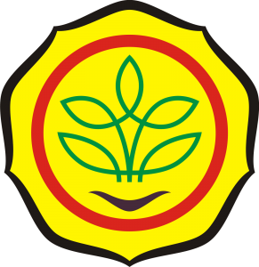
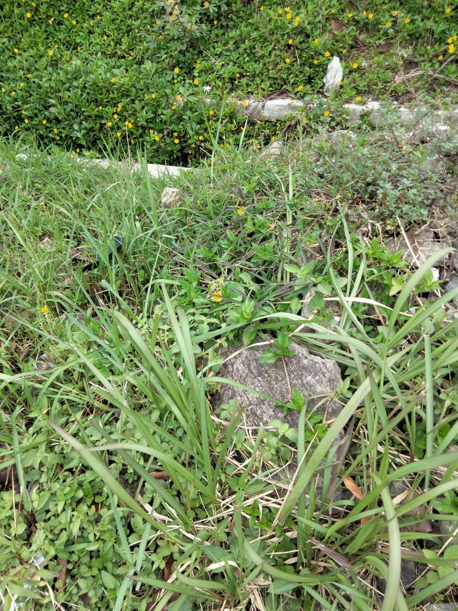

| PENGEMBANGAN DAN PEMANFAATAN BIOSAKA | ||
|  | BIOSAKA sebagai ELISITOR Tanaman
Bio : Tumbuhan / ragam hayati SAKA : Selamatkan Alam Kembali ke Alam (focus th 2019) Penggagas / Inovator : Muhamad Ansar (Petani dari Kab. Blitar) Tercatat di Kemenkumham No. 000399067 Praktek penerapan Biosaka dilakukan sejak th 2010. Biosaka berupa “ramuan” dari rumput/ daun terpilih Biosaka BUKAN Pupuk (Kandungan hara mikro & makro rendah) |
|
| PENGERTIAN BIOSAKA | Link Praktik Pembuatan | |
| KEUNGGULAN BIOSAKA
Mudah aplikasinya,sedikit kebutuhannya (1,5 liter / hektar /musim tanam), untuk padi, jagung,kedelai Waktu pembuatan relative cepat, 10 sampai 30 menit, sudah bisa langsung dipakai Bahan biosaka mudah ditemukan, bisa dibuat dari semua jenis ragam hayati (memenuhi syarat bahan) Tidak membutuhkan teknologi /alat khusus (hanya mengunakan tangan) Bisa disimpan dalam waktu lama, pengalaman Pak Anshar hingga 5 tahun (untuk kualitas biosaka yang bagus) Mengurangi penggunaan pupuk kimia hingga 50 hingga 70% dari kebiasaan petani. |
KELEMAHAN BIOSAKA
Tidak bisa diproduksi dengan mesin Bahan Baku harus berganti setiap pembuatan |
|
| PROSES PEMBUATAN
Dipilih minimal 5 jenis dari rumput / daun Warna rumput / daun bebas Perform sempurna (paripurna) Ukuran daun simetris, tidak terkena hama/penyakit/ tidak bolong-bolong, Tidak jamuran, ujung daun tidak kusam dan warna daun rata. Ambil agak ke pucuk/daun masih hijau, boleh diambil 2-4 daun dengan batangnya. Bisa diambil secara manual dengan tangan atau dengan alat Campurkan bahan dengan air yang sudah disiapkan Lakukan peremasan dengan tangan kanan, tangan kiri memegang pangkal bahan. Sekali meremas diikuti sekali memutar / mengaduk air ke kiri Diremas sampai selesai, tidak berhenti,tidak sampai hancur batangnya, tangan dan bahan tetap di dalam air dan tidak berganti orang. Lebih efektif pembuatan Biosaka dilakukan secara bersama - sama. Meremas menggunakan tangan, bukan dengan mesin Peremasan dilakukan hingga homogen, harmoni / koheren (dibutuhkan waktu rata - rata kisaran 10 - 20 menit bahkan bisa 1 jam/ lebih. |
INFORMASI TENTANG BIOSAKA
Aplikasi Biosaka efektif bila dibuat dan diaplikasikan di lokasi hamparan insitu dari bahan Biosaka diambil. Jarak maksimal untuk lokasi aplikasi sejauh 20 km dari lokasi sumber bahan Biosaka diambil. Untu lahan yang sudah tidak sehat harus lebih dekat lagi. Hasil biosaka yang jadi bisa dicampur satu dengan lainnya,oleh karena itu dianjurkan membuat secara bersama sama. Aplikasi bisa dicampur dengan APH / pestisida nabati tapi sesuai SOP Aplikasi Biosaka. Larutan dikatakan tidak jadi jika terjadi fermentasi, yang dapat disebabkan karena bahan hancur, bahan sering diangkat ke udara (tidak tenggelam di air) sehingga terjadi oksidasi, berhenti meremas sebelum larutan jadi / homogen. Informasi lebih lengkap, dapat diperoleh dari Youtube Propaktani (Biosaka) atau Youtube tentang Biosaka dengan narsum Pak Ansar, Prof Robert Manurung dll. |
SUMBER BAHAN BIOSAKA
 |